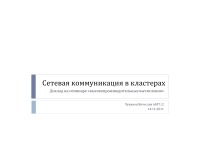

Инструментальные средства высокопроизводительных вычислений
Презентации подготовлены студентами группы 6057/12, под руководством Баденко В.Л.
Справка: Щёлкните по слайду слева для предпросмотра презентации в браузере. Для просмотра PDF-версии презентации вам может понадобиться дополнительная программа
General-purpose GPU, PDFGeneral-purpose graphics processing units (GPGPU) — решение
произвольных вычислительных задач с использованием графического процессора.
В докладе изложена история возникновения этого направления
высокопроизводительных вычислений, приведены его основные концепции и
техники. Представлены примеры успешного использования графического
процессора для решения задач гидроаэродинамики, медицины,
томографии и т. д.
|
|
MapReduce, PDFMapReduce — программная модель для решения задач обработки
больших массивов данных в распределённых системах, представленная в
2004 году компанией Google. В докладе приведено подробное описание
этой модели и примеры задач, решаемых с её помощью.
|
|
Message Passing Interface, PDFMessage Passing Interface (MPI) — открытый стандарт написания
параллельных программ для систем с распределённой памятью на языках С, С++
и Фортран. В докладе изложена основная модель межпроцессорной
коммуникации — модель передачи сообщений — и
представлено подробное описание библиотечных функций. В заключение приведён
пример MPI-программы.
|
|

|
Open Multi-Processing, PDFOpen Multi-Processing (OpenMP) — открытый стандарт для
распараллеливания C, C++ и Фортран-программ на многопроцессорных
системах с общей памятью. В докладе изложена основная модель
параллелизма — модель
«ветвление–объединение» — и перечислены
директивы компилятора, библиотечные процедуры и переменные окружения,
используемые в OpenMP. Также приведён пример распараллеливания программы
средствами OpenMP и сравнение OpenMP с MPI.
|
Top50 СНГ, PDFTop50 — это проект по составлению рейтинга и описаний 50
самых производительных суперкомпьютеров, находящихся на территории СНГ. В
докладе объяснено, как измеряется производительность, и приведено
подробное описание самого производительного суперкомпьютера
СНГ — «Ломоносова». Также представлена любопытная
статистика о производителях процессоров, разработчиках и областях
применения суперкомпьютеров из этого рейтинга.
|
|
Top500, PDFTop500 — это проект по составлению рейтинга и описаний
500 самых производительных суперкомпьютеров мира. Доклад посвящён тому,
кто и зачем составляет этот рейтинг, как измеряется производительность и
какая дополнительная информация включается в описание суперкомпьютеров.
Также представлено описание суперкомпьютеров, занявших первые три строки в
рейтинге Top500 в июне 2011 года.
|
|
Высокопроизводительные системы HP и SGI, PDFДоклад посвящен суперкомпьютерам, разработанным фирмами HP и SGI.
Рассматривается архитектура, операционные системы (так называемые
кластерные среды), необходимые для работы суперкомпьютеров, а также
прикладное ПО, разработанное для работы в кластерной среде. Также
приводятся примеры применения данных систем в научных организациях для
различных областей науки.
|
|
Высокопроизводительные системы. ОС. Программные средства, PDFРассмотрены операционные системы, фигурировавшие в списке Top500 в
различные годы, составлен их рейтинг. Приведен список распределенных
файловых систем. Подробно описано применение такого программного средства,
как Hadoop: компоненты для обеспечения работы, процесс установки, фреймворк
для распределенного вычисления задач MapReduce.
|
|
Лекция Воеводина В.В. о суперкомпьютерах, PDFВ докладе представлен краткий обзор двух лекций, прочитанных профессором
МГУ им. Ломоносова Воеводиным В.В. в проекте Academia и посвященных
суперкомпьютерам и их месту в современном научном мире. В первой лекции
уделяется внимание понятию суперкомпьютер, появление и развитие
суперкомпьютеров. Во второй лекции рассказывается о суперкомпьютерных
вычислниях, их применении и эффективности.
|
|
Разработка и анализ высокопроизводительных алгоритмов решения кооперативных игр, PDFВ данном докладе раскрывается тема решения задач из теории игр
используя суперкомпьютерные технологии. Для этого приведены основные
понятия из теории игр и формальная постановка задачи. Далее приводится
алгоритм решения и способы распараллеливания этого алгоритма, а также
результаты эффективности распараллеливания.
|
|
Распределенные вычисления, PDFСоздание метакомпьютера и распределенные вычисления позволяют
использовать колоссальные вычислительные ресурсы компьютерных сетей.
Следующий шаг в этом направлении — облачные вычисления. В
докладе рассмотрены принципы организации распределенных и облачных
вычислений.
|
|
Распределенные файловые системы, PDFВ докладе приведены такие понятия, как файловый сервис и файловый
сервер, а также описаны принцип работы файлового сервера и структура
файловой системы. Далее в качестве примера описана Google File System,
особенности её работы, архитектура и интерфейс, описание основных
компонент.
|
|
Российские конференции и журналы, посвященные высокопроизводительным вычислениям, PDFВ докладе рассказывается о том, какие научные конференции, посвященные
высокопроизводительным вычислениям, проводятся в России, в каких городах
проводятся эти мероприятия, кто выступает их организатором, какова основная
тематика выступлений, и какова цель проведения каждой конференции. Также
приведены названия научных журналов, посвященных теме
высокопроизводительных вычислений.
|
|
Свободный доступ к суперкомпьютерам для решения исследовательских задач, PDFДоклад посвящён обзору доступных для свободного использования
высокопроизводительных систем в Российской Федерации. Основная часть
доклада посвящена суперкомпьютерному комплексу НИВЦ МГУ: свободно
предоставляемые кластером ресурсы, порядок регистрации, архитектура
кластера и предоставляемые средства разработки.
|
|
|  |
Сетевая коммуникация в кластерах, PDFВ докладе приведены основные принципы передачи данных в компьютерных
сетях, и, в частности, внутри кластера. Рассмотрены различные
коммуникационные протоколы и типы коммуникаций, такие как Ethernet,
Infiniband и т.д., а также сравнение их производительности.
|
Суперкомпьютеры в России. Российские компании, PDFВ докладе приведён анализ российского рынка суперкомпьютеров,
перечислены основные проблемы и направления развития отрасли. Подробно
освещена деятельность крупнейших российских компаний: Т-платформы, СКИФ,
КРОК.
|
|
Суперкомпьютеры фирмы Cray, PDFФирма Cray Inc — «законодатель мод» на рынке
суперкомпьютеров. Доклад содержит подробное описание архитектуры
суперкомпьютеров новейших серий XT6 и XE6. Особое внимание уделено
последним изменениям в архитектуре, позволившим вдвое увеличить
производительность вычислительных узлов.
|
|
Суперкомпьютеры фирмы IBM, PDFДоклад посвящён архитектуре суперкомпьютеров серии IBM Blue Gene и
суперкомпьютера IBM Roadrunner, занявшего первое место в рейтинге
Top500 в июне 2009 года. Также представлен список основных достижений
компании IBM, среди которых победа шахматного суперкомпьютера IBM Deep Blue
над чемпионом мира Гарри Каспаровым в 1997 году.
|
|
Таксономия Флинна, PDFМайкл Флинн предложил общую классификацию архитектур ЭВМ по признакам
наличия параллелизма в потоках команд и данных. Затем эта классификация
была расширена. В докладе описаны основные виды параллелизма программ,
их сравнение, а также приведены примеры задач, характерных для того или
иного вида. Приведены примеры первых суперкомпьютеров, в архитектуру
которых был заложен конкретный вид параллелизма.
|